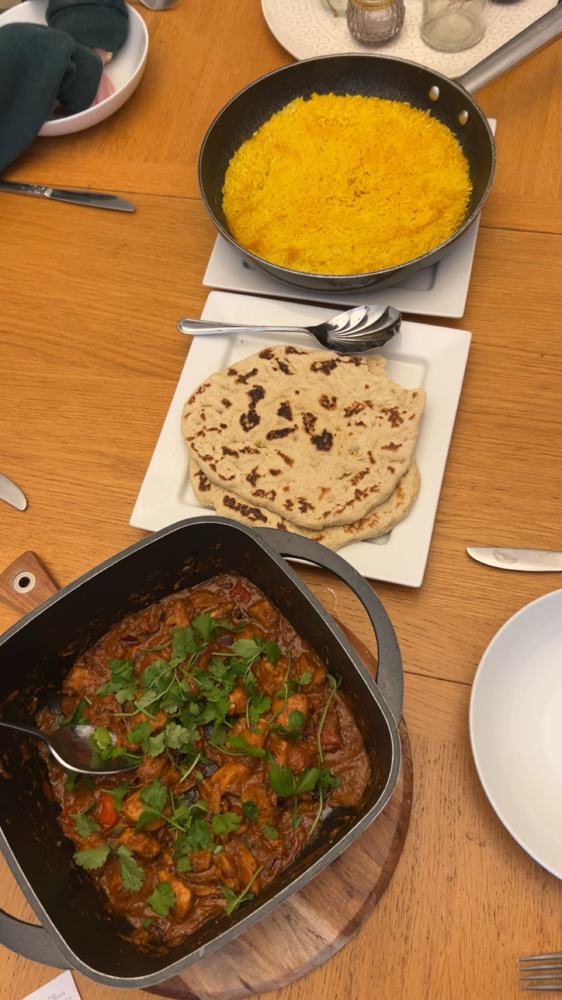

Lamb Rogan Josh

Description
Lamb Rogan Josh is my favourite curry, but I rarely have lamb
as it is expenisve. I normally cook this once a year after we
get a lamb leg for Easter - it's great to cook from leftovers.
This recipe is based off the
Recipe Tin Eats curry, but with a few extras I added myself.
Ingredients
- 1 tbsp butter
- 2 tbsp olive oil
- 1 cinnamon stick
- 10 cardamom pods
- 6 cloves
- 2 small red onions
- 6 cloves garlic
- 1 tbsp grated ginger
- 2 tbsp tomato puree
- salt to taste
- pepper to taste
- 500g leftover shredded lamb
- 400ml chicken stock
Spices
- 2 tbsp sweet paprika
- 1/2 tsp cayenne
- 4 tsp ground coriander
- 4 tsp ground cumin
- 2 tsp turmeric
- 1/2 tsp nutmeg
- 1 tsp garam marsala
- 1/2 tsp fennel powder
- 2 tsp cumin seeds
- 2 tsp coriander seeds
Finishes
- 1/2 tub plain yoghurt
- 1/2 tsp extra garam marsala
- 1/2 tsp extra fennel powder
- sprinkled coriander leaves
- serve with rice
Home